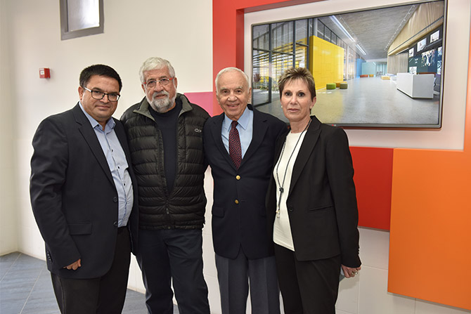
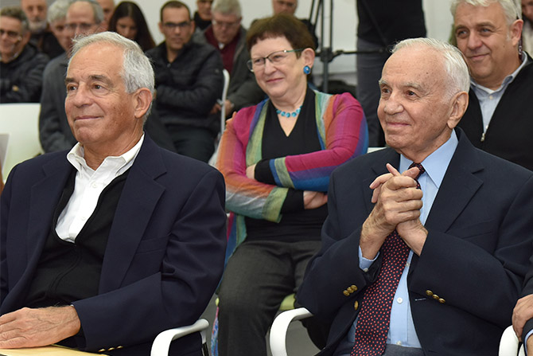
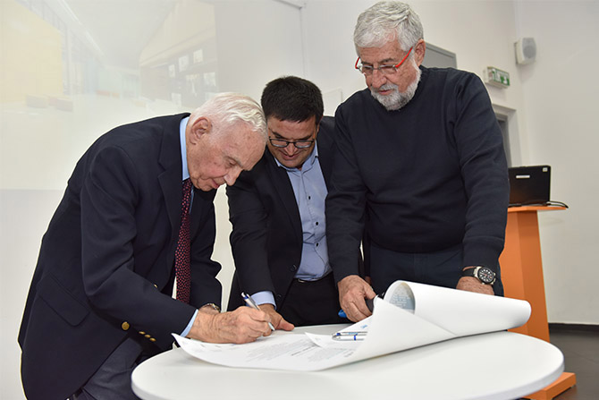

On January 31, 2017, the Mandel Foundation, the Center for Educational Technology (CET), and the New Yeruham Fund marked the laying of the cornerstone for the Jack, Joseph and Morton Mandel Innovation Center. The cornerstone was laid by Mr. Morton Mandel, chairman and CEO of the Mandel Foundation; Professor Jehuda Reinharz, president of the Mandel Foundation; Ms. Gila Ben-Har, CEO of the Center for Educational Technology; Mr. Amram Mitzna, chairman of the New Yeruham Fund; and Mr. Michael Biton, mayor of Yeruham.

Left to right: Mayor Michael Biton, Mr. Amram Mitzna, Mr. Morton L. Mandel, and Ms. Gila Ben-Har
The new center will contain five facilities:
- HUB – An open office environment hosting active groups supported by MindCET, CET’s Center for Leadership and Innovation, which supports unique collaborations between entrepreneurs, researchers, teachers, and students. The space will also be open to soldiers and officers from the IDF’s new training campus, and to hi-tech professionals from across the Negev.
- The Sandbox – A space that will display groundbreaking technologies in the field of EdTech (educational technology) and that will enable visitors to try them out. The space will host workshops and will serve as a setting for individual learning by teachers, soldiers, and technology professionals.
- Fab Lab – A makerspace that will combine a traditional workshop with programming, 3-D printing, and laser-cutting facilities, enabling students, teachers, and entrepreneurs to create almost anything they can imagine. The lab will serve groups from the IDF’s new training campus, and youth from Yeruham and from nearby Bedouin settlements.
- The Flying Classroom – A classroom devoted to research experiments, which will contain technological aids for researchers (built-in recording and documentation devices, a one-way observation window, sensors, and observation points).
- A research wing with classrooms and a hall, for use by the different groups that will participate in MindCET activities, and also for conferences and training sessions for school faculties, opinion makers, officers from the IDF training campus, and fellows and graduates of the Mandel School for Educational Leadership.

Left to right: Professor Jehuda Reinharz, president of the Mandel Foundation; Annette Hochstein, president emeritus of the Mandel Foundation-Israel; Mr. Morton L. Mandel, chairman and CEO of the Mandel Foundation; Danny Bar Giora, director of the Mandel School for Educational Leadership
Retired general and former mayor of Yeruham
Amram Mitzna, chairman of the New Yeruham Fund, praised Mr. Mandel’s idealism, spirit, vision, and longstanding connection with Yeruham, and remarked: “This Center will be not just an important place for the educators of Yeruham and for the people of Yeruham, but it will serve as a national center and even an international center for promoting teaching, education, and leadership.”
Michael Biton, mayor of Yeruham and himself a graduate of cohort 18 of the Mandel School for Educational Leadership, thanked Mr. Mandel for the impact that he had on shaping his own leadership development and for his ongoing contribution to Yeruham, where the Mandel Center for Leadership in the Negev trained the next generation of local leaders. “The new center is the next level of change in Yeruham,” he said to Mr. Mandel. “In two years, when it opens, we will have hundreds of people working here: educators, leaders, entrepreneurs, business initiatives, and economic development.”
“The Jack, Joseph and Morton Mandel Center in Yeruham will impact beyond our frontiers and allow us to deepen and expand MindCET’s work in the education system, the Negev, and the world,” said
Gila Ben-Har, CEO of the Center for Educational Technology and a graduate of the first cohort of the Mandel School for Educational Leadership. She stressed that the new center in Yeruham will greatly contribute to teachers, local start-ups, and the IDF.
In his address,
Morton Mandel, chairman and CEO of the Jack, Joseph and Morton Mandel Foundation, expressed his delight that the Mandel Foundation is able to assist in the establishment of a cutting-edge center for educational innovation, as part of its longstanding commitment to Yeruham and its residents. He took particular pride in the fact that Mayor Biton of Yeruham and Gila Ben Har, who partnered with the Foundation in this initiative, are among the 400 graduates of the Mandel School for Educational Leadership, and acknowledged the contribution of Annette Hochstein, president emeritus of the Mandel Foundation-Israel, to their training. In closing, he expressed his gratitude that the Mandel Foundation was able to contribute to a Center with so much transformative potential and reaffirmed his commitment to Yeruham and the Negev.
At the end of the ceremony, a cornerstone scroll was signed by the partners involved in the establishment of the Center. The text of the scroll reads: “May this center serve as an enabling environment of innovation, creativity, and knowledge. May the connections created between entrepreneurs, developers, educators, and researchers lead to educational solutions based on innovative breakthrough technology, which will encourage and promote education in Israel and throughout the world. We thank the Jack, Joseph and Morton Mandel Foundation for this generous support and for its dedication to the development of the Negev, the State of Israel, and education, for the sake of all mankind.”

Left to right: Mayor Michael Biton, Mr. Amram Mitzna, Mr. Morton L. Mandel, and Ms. Gila Ben-Har
{kind=link}
{kind=link}